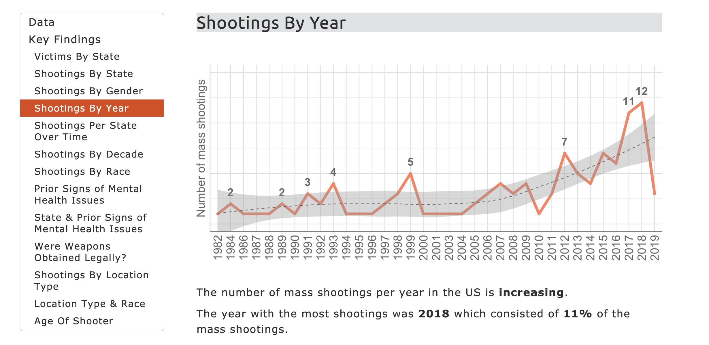

Nic Fox

Hi! I'm Nic. I'm a Data Science MSc student in Manchester (UK) learning R and Python.


Projects
US Mass Shootings
An analysis of US mass shootings data (1982 to 2019) provided by Mother Jones. Analysis done using R in RStudio, results published to HTML using R Markdown, and styled using CSS.
